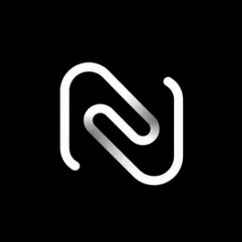

Autonomous & Local
Nothing runs at startup. Captures, socket bindings, and network queries initiate solely on demand, keeping all state within local memory.

NET0ZEnetoze 2.0.0 · Digital Infrastructure & Secure Solutions
netoze provides autonomous, proprietary digital infrastructure and secure solutions for real-time network monitoring, deterministic packet capture, and native host telemetry without external telemetry egress.
Enterprise-Grade Performance
netoze watches what you point it at and keeps every result on your physical machine. Engineered from the ground up for authoritative forensic truth.
Nothing runs at startup. Captures, socket bindings, and network queries initiate solely on demand, keeping all state within local memory.
Cryptographically validated insights with strict source attribution. Every packet observation ties directly to physical socket lifecycles.
Handcrafted in-house network analysis algorithms and native correlation engines — zero external tool dependencies or third-party wrappers.
High-Intent Capabilities
Every operational surface draws from the same local evidence repository, ensuring complete provenance. Current stable distribution is release 2.0.0.
Real-time network flow telemetry correlated with operating system process sources, socket states, and precise microsecond timestamps.
Targeted packet capture and protocol parsing with instant forensic brief synthesis and zero disk overhead.
On-demand network interface inspection and socket diagnostics. Fully manual and deterministic with zero background probing.
Query stored network evidence natively without esoteric syntax or complex server setups.
Captures, traces, and audit logs persist securely in encrypted or raw local volumes under direct user ownership.
Direct low-overhead hardware correlation between incoming wire packets and host processes, designed for top-tier security standards.
Architectural Superiority
Comparing netoze proprietary in-house digital infrastructure against legacy packet tools and cloud SIEM monitors.
| Evaluation Metric | netoze Core Architecture | Legacy Byte Inspectors | Distributed Script Daemons | Cloud SIEM Monitoring |
|---|---|---|---|---|
| Data Sovereignty & Residency | ✓ 100% Local (Zero Egress) | 100% Local | 100% Local | ✗ Cloud Synced / Telemetry |
| Process-to-Socket Correlation | ✓ Native In-Engine Binding | ✗ Disconnected | Requires custom daemons | Heavy agent required |
| Operational Simplicity | ✓ Unified 3-Step Loop | High cognitive byte overload | Complex CLI configuration | Esoteric query languages |
| System Implementation | ✓ 100% Proprietary In-House | Legacy monolithic codebase | Cluster-dependent daemons | Proprietary cloud agent |
| Telemetry Footprint | ✓ Guaranteed Zero Telemetry | Minimal | Minimal | ✗ Mandatory Log Uploads |
Architecting autonomous digital infrastructure, proprietary high-performance network analysis engines, and zero-compromise secure systems for netoze.
Frequently Asked Questions
Direct technical answers regarding netoze architecture, security protocols, and platform compatibility.
netoze is an elite digital infrastructure and local-first network security platform designed for Windows and Linux. It enables network architects and security engineers to observe live traffic flows, capture packets with native precision, and correlate local host socket activity without cloud telemetry.
Traditional packet inspectors display disconnected byte streams without host context. netoze proprietary in-house correlation engine maps wire events directly to native process identifiers and socket lifecycles in real time with zero external dependencies.
No. netoze operates strictly under an absolute zero-telemetry guarantee. Captures, forensics, and host metrics remain 100% on local physical hardware.
netoze supports 64-bit Windows 10/11 and Linux distributions (Ubuntu, Debian, Fedora, Arch) via native packages (.deb and .AppImage).
Cryptographically verified binaries and SHA-256 signatures are published directly on the downloads portal and mirrored on the official GitHub repository.
netoze 2.0.0 is verified and ready for deployment on Windows and Linux.